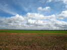
Coulaines, mon premier outdoor 2010, c'est parti à travers la Beauce, j'aime bien ces paysages, avec des traînées et des petits strato-cumulus dans le ciel...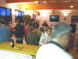
Arrivée vendredi, un petit pot d'accueil, bien sûr, j'ai amené un peu de provisions pour attendre l'accueil officiel, je connais, Josette est toujours débordée par ce qu'elle nous prépare de bon !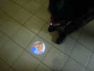
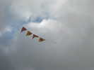
Samedi matin, temps gris, mais pas froid. Je fais voler pour la première fois mes fanions CVCF : tout le monde est invité à en faire pour manifester notre présence, les miens sont équilatéraux de 30 cm de côté, Michelle et Patrick en ont fait de 50 cm. Eric propose 30 cm de haut et 50 de long, Christian dit qu'il faut que l'angle supérieur soit droit pour une meilleure lisibilité.... Faites comme vous voulez, mais faites, ce sera sympa !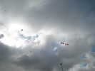
Evidemment, 30 cm, c'est petit dès qu'on monte un peu. Mais le but, c'est de les avoir en bas de la ligne pour signer les cerfs-volants...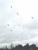
Vierzon est arrivé, avec une belle panoplie de pyrodeltas multicolores qu'ils font voler en choeur !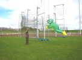
Patrick l'Higuinen met au point la grenouille qu'il a réalisée à l'atelier de Somain. Il a trouvé ça très sympa, maintenant, faut que ça vole !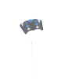
Jean-Luc Vansnickt a monté ce ParaSled sobre et plus que stable, résistant à tous les vents !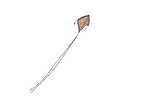
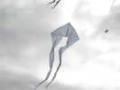
Patrick l'Higuinen inaugure aussi son Pyrodelta qu'il a terminé hier vers 18 h. Heureusement, un pyro, ça ne réserve pas de surprises et il volera sans problème...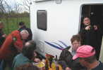
Avant le déjeuner, bien sûr, un peu d'agitation autour des campings-cars qui disposent de leur aire au fond du terrain...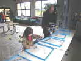
Ce midi, dans la salle, chacun amènera son pique-nique, en attendant les repas grandioses des Toiles du Vent ! Joël a installé ses toboggans à bille en indoor, au grand plaisir des enfants !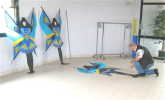
Claude, lui, continue la construction de ses créatures celtiques et ailées. Il en a fait... quinze... Mais elles ne voleront pas ce week-end, Claude a bien d'autres créations à mettre en l'air !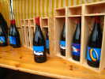
A la sortie, un oenophile nous propose des bouteilles et des magnums à l'étiquette... du festival en cours !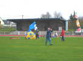
Claude a bien mangé, il a du tonus, mais où court-il comme ça ?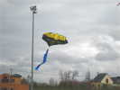
Et voilà une des merveilles promises : un flow-form triangulaire, ça c'est nouveau et rare ! En fait, il a pris la toile d'un delta déjà décorée dans son style, mise devant-derrière et complétée de poches supérieures style flow-form. Et ça vole !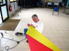
Jean-Pierre, lui, est resté dans la salle pour mettre la dernière main à son Jessica léger ! Il coupe les barres à la meuleuse, que cela ne doit pas beaucoup freiner...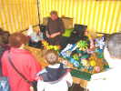
Jean-Claude Anquier, lui, tient son stand habituel et continuera tant que les enfants (et les parents) le regarderont avec des yeux émerveillés...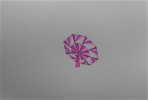
Joël a sorti une nouvelle création tournante, une sorte de parapluie découpé judicieusement pour créer la rotation, et avec juste une discrète dérive pour le stabiliser et attacher la ligne !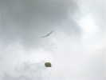
J'ai sorti mon Albatros qui monte bien aujourd'hui, tant que la toile n'est pas trop mouillée (demain, ce sera une catastrophe !) ! J'ai monté un peu les fanions pour voir, hé bien on voit qu'on ne voit rien !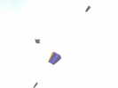
Pas mal de cerfs-volants en vol quand même, comme ce Sled à poches, ou ce Météo un peu spécial...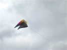
Patrick L'Higuinen a sorti son flow-form tout neuf (acheté, je suppose), un porteur costaud !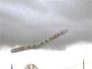
Dessous, la grande manche du CVCF, non-rotative, et avec le nom non-abrégé...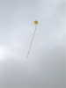
Au-dessus, un Pétillon, dont on se méfie comme de la peste : si la queue pleine de noeuds se prend dans votre ligne, il se retourne en un piqué bien rectiligne et tire votre CV jusqu'au sol !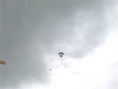
François en a eu assez de voir son Flare se retourner sur le dos, et a monté son classique Conyne Bleu et Rouge. Mais un grand, pour lui, faut que ça tire.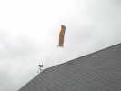
Le vent force, avec des surventes et je ne suis pas monté pour ! J'annonce que ça ne va pas tarder à casser et 10 s après... ça casse ! J'ai de l'expérience, quand même ! Bientôt, j'annoncerai assez tôt pour éviter l'accident... Bon, je pars à pied à travers champs et clôtures. Bon augure, en m'approchant, une ferme avec un oiseau-girouette et peu après, je vois au sol mon Albatros, en bon état apparent !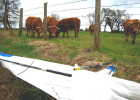
Il est dans un pré avec des vaches... Je rampe sous la clôture en barbelés, j'attrape l'Albatros, je repasse vite la clôture et je me retourne : toutes les vaches sont là ! Un peu inquiétant, mais maintenant, les barbelés sont entre nous !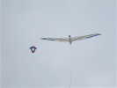
Je change la ligne pour une plus grosse, et c'est reparti...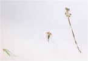
Emmanuel Duba a bien entendu son Jardin de Chats, avec maintenant des Chats-ponts, mais aussi un cerf-volant chat à longue queue !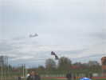
Au bout du terrain, des pilotables, un ou deux 2-lignes individuels, et plusieurs Révos en team plus ou moins formé dont ceux de Hugo Magnon...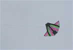
Ici, on voit mieux ce Météo, qui comporte une toile biaise supplémentaire. On peut dire aussi que c'est un Conyne plus une aile de Météo...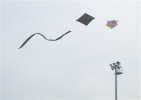
Le Rokkaku de Mark et un Carré se disputent pour savoir qui ira le premier dans le poteau ! Les cervolistes se méfient quandd même un peu plus tous les ans, pas d'accrochages pour le moment !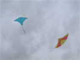
Le vent a baissé, Jean-Pierre remet en route son Jessica, et je sors ma raie Manta...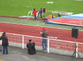
Christophe Jacquemoud est arrivé avec son Delta Vapeur, et fait participer les enfants... Mais sa ligne tirera longtemps à 6 ou 7 kg quand même...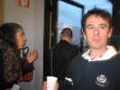
C'est peut-être lui, l'auteur des fleurs à Josette, il a un rôle que je n'ai pas bien retenu dans l'organisation des fêtes à Coulaines !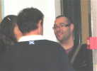
Un journaliste fou est arrivé et brandi sa carte de Presse en râlant auprès de tout le monde parce que personne ne veut ressortir de cerf-volant pour lui... Pourtant Jean-Pierre est encore en l'air, et quand je ressors ma Manta, ça ne l'intéresse pas, faut qu'il râle !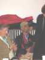
Avant le grand repas du samedi soir, un petit apéritif, donc. Emmanuel et Geneviève ont rentré les chats, qui ont bien supporté la pluie quand même !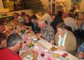
Les tables sont magnifiquement décorées comme d'habitude, avec ensemble de vraies fleurs, chemins de table, perles, étoiles, serviettes complexement pliées, etc. Et la chère n'est pas en reste !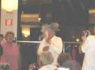
Le garçon dont j'ai parlé plus haut a amené un gadget dans lequel il faut souffler pour faire tourner un moulin. Mais ya un truc : si vous ne connaissez pas, vous prenez une bouffée de talc dans la figure, comme Jean-Pierre... Le mieux, c'est ceux qui pensent avoir trouvé le truc, et soufflent un bon coup !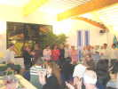
Le meneur en chef profite du micro qu'il a manié toute la journée pour présenter toute l'équipe de bénévoles, que nous remercions bien !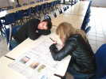
Dimanche matin, petit-déjeuner et journal, il y a un article sur moi, mais ça n'intéresse pas tout le monde... Et certains ont dû passer une nuit agitée...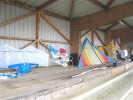
Dimanche, il pleuvra pas mal. Mon Albatros, déjà détendu par une modif faite pendant l'hiver et insuffisamment testée, sera complètement ramolli par la pluie. Je ne suis pas le seul à garer mon CV sous la tribune...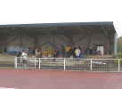
Les cervolistes eux-mêmes, mais aussi le public (rare, évidemment) n'hésiteront pas non plus à profiter de l'abri !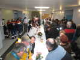
Le déjeuner a été plus simple, mais encore très bon. Ca change des plateaux-repas de certains festivals...